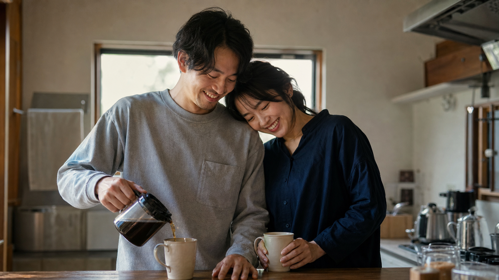

朝起きて、LINEの通知が
来ていないのを見て気持ちが落ちる。
大切な人との別れに悩むあなたへ
別れたあとも、
なぜか彼のことが
頭から離れないあなたへ
「もう忘れた方がいい」と思っているのに
なぜ彼は何度も頭に浮かぶのか？
彼を想って苦しくなる毎日から、
また彼の隣で笑っている毎日へ。
「あの時、諦めなくてよかった」
そう思える未来は、「今」ここから始まります。
ジローと一緒に
幸せを掴んだ人たち
6,000件以上の復縁相談を通して、
一人ひとり違う恋愛と向き合ってきました。


今のあなたは、
こんな気持ちじゃないですか？
仕事中は普通に過ごしているのに、
帰宅途中にふと彼を思い出す。
彼との昔のLINEを遡って、
「あの時は幸せだったな」と過去の自分を後悔する。
彼がSNSを更新していると、
知らない女性が写っていないか確認してしまう。
戻れるなら、
もう一度戻りたい。
今のあなたがこんな気持ちなら、
絶対に知ってほしいことがあります。
知識を増やしても、苦しさが消えない理由
あなたが今でも彼を
思い出してしまう原因
InstagramもYouTubeも見た。
ネットでも復縁についてたくさん調べた。
「で、私は何をしたらいいんだろう？」
知識は増えたのに、彼のことになると答えが出ない。
それでも苦しさが消えないのは、
あなたの中に
「私は最後には
愛されなくなる」
という感覚が残ったままだからです。「私と彼の場合」が
分からない。
必要なのは、知識をもう一つ増やすことではなく、
あなた自身に残った痛みを見ることでした。
あなたが悪いわけではありません
必要なのは、さらに復縁の知識を
増やすことではありません
別れにつながった考え方や行動を整理して、
彼と落ち着いて向き合える自分に変わっていくこと。
彼に好かれるために
自分を偽るのではなく
「内面改善」
不安に振り回されない自分として
彼と向き合えるようになること。
彼との間で起きたことは、
今回の別れだけが原因じゃない
過去の経験
浮気された突然フラれた誰かと比べられた大切な人が離れた
「また愛されなくなるかも」
気づかないうちに、彼を失う怖さが強くなる
今の恋愛で起きること
不安になる我慢する最後にぶつける
こうした過去の経験が、
「また愛されなくなるかもしれない」という不安につながる。
返信が遅いだけで不安になったり、
他の女性が気になったり、
我慢した気持ちを
最後にぶつけてしまったり。
同じことを繰り返してしまうのは、
あなたに魅力がない
からではありません。
過去の恋愛で身についた考え方や反応が、今も残っているからなんです。
別れの原因も、繰り返す恋愛パターンも一人ずつ違いました
6,000件以上
本当に一人として、同じ恋愛はしていませんでした。
「返信が来なくて不安になり、何通もLINEしてしまった」
「元カノと自分を比べて、好きと言われても信じられなかった」
「嫌われたくなくて我慢して、最後に全部ぶつけてしまった」
全員に同じ方法を当てはめても、
その人に必要な内面改善までは分かりません。
まず知るべきなのは、
あなたと彼の間で何が起きて、
どんな考え方や行動を変える必要があるのか。
ここまで読んでくれたあなたのためへ
今回だけ、
無料で個別相談を開催します。
「私は、何を変えたらいいの？」
「私と彼の場合は、何をしたらいいの？」
あなたと彼の状況を僕が直接聞いて今の二人に必要な内面改善と行動を一緒に整理します。
今回ご案内できるのは限定 15名お申し込みの受付は募集開始から 3日間
ジローに個別相談してみる1時間程度・日程は個別に調整します個別相談で一緒に整理すること
2人が別れた本当の原因
彼に言われた理由だけでなく、付き合う中で何が積み重なっていたのかまで見ます。
彼の性格・男性心理
彼がどんな恋愛をする人なのか、今どんな気持ちでいるのかを整理します。
今の2人の状態
今は連絡する時なのか、まだ待った方がいいのか。今の距離感を一緒に見ます。
繰り返してきた恋愛パターン
不安になった時に何を考え、どんな行動を取ってきたのか。別れにつながったパターンを見つけます。
今、動くのか。待つのか。
LINEした方がいいのか、何もしない方がいいのか。あなたと彼の場合で決めます。
次に何をするのか
相談後に迷わないよう、ここから実際にやることまで一緒に決めます。
「私と彼の場合はどうなの？」をそのまま僕に聞ける特別な相談企画です。
今まで一人で調べて、考えて、迷ってきたことをこの機会に全部持ってきてください。
今回ご案内できるのは限定 15名お申し込みの受付は募集開始から 3日間
ジローに個別相談してみる1時間程度・日程は個別に調整しますジローと一緒に
幸せを掴んだ人たち
一人で悩み続けることをやめて、
自分の恋愛と向き合った方々の記録です。


今回ご案内できるのは限定 15名お申し込みの受付は募集開始から 3日間
ジローに個別相談してみる1時間程度・日程は個別に調整します迷ったままでも大丈夫です
100%「彼と戻りたい」と
思っていなくても大丈夫です。
彼のことはまだ好きだけど、戻るのが正解か分からない
復縁できたら嬉しい。でも、また同じことを繰り返すのは嫌
もう少し頑張りたいけれど、諦めた方がいいのかとも思う
自分でも、彼への気持ちをうまく整理できない
こんな状態のまま参加して大丈夫です。
「私は本当に彼と戻りたいの？」
そこから一緒に整理するための個別相談でもあります。
個別相談についてのQ&A
Q別れてから時間が経っています。それでも相談していいですか？
A
もちろん大丈夫です。期間だけで復縁できるかどうかは決まりません。今の2人の関係、別れた原因、彼が今どんな状態なのかを見ながら、残っている可能性を一緒に整理します。
Q彼にブロックされています。それでも相談できますか？
A
大丈夫です。ブロックされた結果だけでなく、なぜそこまで関係が悪くなったのかを見ることが大切です。今すぐ連絡を取ることだけを目標にせず、今の状況でできることから整理します。
Q彼に新しい女性がいそうです。それでも意味はありますか？
A
それだけで諦める必要はありません。新しい女性との関係や、今のあなたと彼にどんな関係が残っているのかまで見たうえで考えていきましょう。
Q自分にどんな恋愛パターンがあるのか分かりません。
A
分からなくて大丈夫です。今の彼とのことだけでなく、これまでの恋愛も聞きながら、不安になった時の考え方や行動を一緒に整理します。
Q内面改善って、結局何をするんですか？
A
まずは別れにつながった考え方や行動を知ること。そこから、不安や我慢に振り回されず、彼と落ち着いて向き合える状態をつくっていきます。難しいことをいきなり始めるものではありません。
Q昔このLINEを追加した時とは、違う彼の相談でもいいですか？
A
もちろん大丈夫です。前に悩んでいた彼でなくても、その後に付き合った彼でも、最近別れた彼でも問題ありません。今あなたの頭から離れない彼のことを聞かせてください。
彼ともう一度やり直したいなら、
そのために今できることを一緒に見つければいい。
まだ自分の気持ちが分からないなら、
無理に答えを決めなくても大丈夫です。
いつか、また彼の隣で笑いながら
「あの時、諦めなくてよかった」
そう思える未来を、
一緒に目指していきましょう。

今回ご案内できるのは限定 15名お申し込みの受付は募集開始から 3日間
ジローに個別相談してみる1時間程度・日程は個別に調整します復縁アドバイザー ジロー